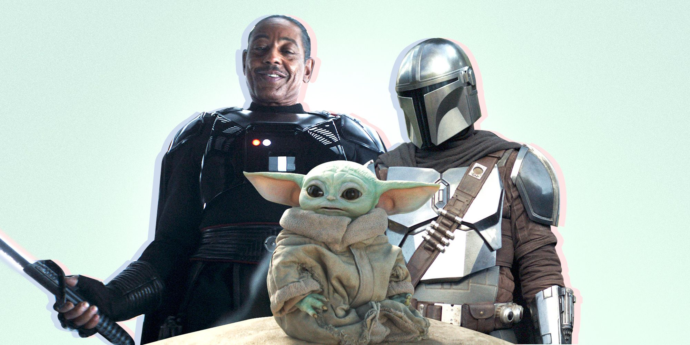

“Мандалорець” - це серіал, який вдихнув нове життя у Всесвіт Star Wars. Однозначно, коником серіалу є ДУЖЕ цікавий сюжет і різні відсилки на оригінальну трилогію. Через це серіал і отримав хороші відгуки як від фанатів, так і від людей, які майже нічого не знають про даний лор.
Та, звісно, людям, котрі не дуже обізнані у даній франшизі, може не подобається місцями простуватий сюжет, схожий на хорошу історію. Все-таки серіал створювався більше на аудиторію фанів.

Дія переносить глядача на п'ять років вперед після падіння Галактичної Імперії і розповідає історію мовчазної найманця, що заробляє на життя виловом злочинців-втікачів в найвіддаленіших зоряних системах. Втомившись працювати за копійки, він звертається до грифа Карго, лідеру Гільдії мисливців за головами, щоб той доручив йому складне і високооплачуване завдання. Мандалорця відправляють на пустельну планету Арва-7, де йому належить відшукати потрібну ціль, а також протистояти іншим найманцям, які бажають його випередити.
1. Переглянути 8 перших фільмів франшизи, та мультсеріали “Війна клонів” та “Повстанці”.
2. Після перегляду кожної серії, можна подивитися наш детальний розбір тут.
Малий Йода: джедай чи ситх?
>
Єдине, що свідчить, про те, що він ситх, це його удушающий, у стилі Дарта Вейдера. Та вже в другому сезоні, його забрав Люк Скайвокер, тому точно сказати можна тільки те, що малюк, ще не визначився зі своїм майбутнім і не розібрався зі своїми почуттями.

.png)
.png)
.png)